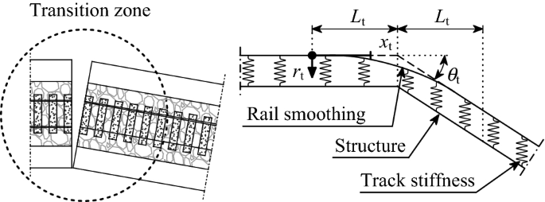

Wheel–rail contact model for railway vehicle–structure interaction applications: development and validation
Abstract
An enhancement in the wheel–rail contact model used in a nonlinear vehicle–structure interaction (VSI) methodology forrailway applications is presented, in which the detection of the contact points between wheel and rail in the concave regionof the thread–fange transition is implemented in a simplifed way. After presenting the enhanced formulation, the model is validated with two numerical applications (namely, the Manchester Benchmarks and a hunting stability problem of a sus‑pended wheelset), and one experimental test performed in a test rig from the Railway Technical Research Institute (RTRI)in Japan. Given its fnite element (FE) nature, and contrary to most of the vehicle multibody dynamic commercial software that cannot account for the infrastructure fexibility, the proposed VSI model can be easily used in the study of train–bridge systems with any degree of complexity. The validation presented in this work proves the accuracy of the proposed model,making it a suitable tool for dealing with diferent railway dynamic applications, such as the study of bridge dynamics, train running safety under diferent scenarios (namely, earthquakes and crosswinds, among others), and passenger riding comfort.Keywords Vehicle–structure interaction · Wheel–rail contact · Manchester Benchmarks · Thread–fange transition ·Dynamic analysis · Model validation
1. Introduction
The dynamic efect on structures, such as bridges, caused bymoving vehicles is a topic that has been attracting research‑ers and engineeringpractitionersfor a long time. These efects can be assessed through transient moving load models [1–3] or by using more realistic vehicle structure interaction (VSI) models [4–7]. While the frst method is restricted to the analysis of the structural response, since the vehicle is represented as a set of moving loads corresponding to its static axle loads, the latter can also be used to assess the vehicle’s behavior, including its dynamic response and the contact forces that arise from the contact interface. These models can be used in both roadway [8–10] and railway [4–7] applications, with diferences in the contact interface, namely, between tire–surface and wheel–rail contact mechanisms. Since the present work focuses only on railway, only the latter will be addressed hereinafter.VSI models in railways can be used in a wide range of applications, such as the study of bridge dynamics [11–14], evaluation of the train running safety [15–17], and assessment of passenger riding comfort [18, 19], among others. Depending on the objective, the VSI models may have different degrees of sophistication. The simpler ones are those that deal only with the vertical dynamic behavior, which have been widely developed since the 1980s [20–22] due to its simplicity on dealing with the coupling between the wheel and rails. However, they are restricted to the analysis of the vertical vibrations on both the train and the structure, thus not being able to deal with phenomena caused by lateral excitations, such as wind, earthquakes, or even lateral track deviations. Naturally, such drawback makes these models incompatible with any type of analysis that strongly depends on this type of excitations, namely, running safety analyses or riding comfort evaluation. To overcome the aforementioned limitations, several researchers start to focus their work on developing complex contact models that could accurately simulate the behavior on the wheel–rail contact interface, thus allowing the evaluation of the contact forces in all the directions, including the lateral one. Within this topic, special attention has been given by mechanical engineers in the development of wheel–rail contact models in multibody environments, where the track fexibility is not considered or is considered in simplifed forms. Examples of such applications can be found in several publications. Shabana and Rathod [23] made a comparison between planar and spatial contact detection methods using nonlinear geometric equations, in which the contact points could be in a 2D plane or a 3D curve (contact points in diferent longitudinal positions), respectively. The authors concluded that the two options do not afect the vehicle’s critical speed, but some deviations may occur in the estimation of the contact forces due to small diferences in the contact point locations. Sugiyama and Suda [24] proposed a hybrid strategy to detect the contact points, in which an ofine approach is used to detect the tread contact point, and an online method is applied to detect the contact point in the fange. While the former is based on precalculated lookup tables that are interpolated during the analysis, the later consists of detecting the contact point in real time during the dynamic analysis. Bozzone et al. [25] proposed an alternative to the nonlinear geometric equations used by the previous authors. In this work, the position of the contact point is also determined online, but based on intersection volumes, i.e., the contact point location is determined based on the farthest points belonging to the intersection of the contacting surfaces that defne the wheel and rail profles. More recently, Magalhaes et al. [26] proposed a complex and comprehensive online contact model able to detect multiple contact points in switches and crossings scenarios, while Sun et al. [27] used an alternative ofine contact approach based on lookup tables to efciently detect contact points in hunting stability scenarios. These models, however, are restricted to multibody simulations and cannot address the response of the structure.
2. Wheel–rail contact formulation
In a previous publication from the author [35], the contact model did not contemplate the possibility of fnding wheel–rail contact pairs in the concave region of the wheel (transition zone between the tread and fange) due to the multiple solutions that could arise from the geometrical non linear system of equations that will be presented later in this section. In this work, this drawback has been overcome with an alternative algorithm for detecting contact pairs in the concave regions of the wheel, thus avoiding the simplifcation of the wheel surface geometry adopted in [35]. The full contact algorithm is described in the following sub-sections. After defning the surfaces of the contacting bodies, the next step of the geometric problem consists of determining the position of the contact points between the wheel and the rail. In the present work, and contrary to the author’s previous work [35], two algorithms for the detection of contact points are implemented. The frst algorithm is used to detect the position of contact points lying on convex regions of the surfaces , while the second is applied when the contact point is located on concave regions . By simultaneously guaranteeing that the tangent vector to the rail is perpendicular to the vector that defnes the relative position between the contact pair (frst condition) and that the normal vector to the rail is perpendicular to the tangent vector of the wheel (second condition), it is possible to defne the contact point position. The system of Eq. (1) may have multiple solutions if one of the contact surfaces is not convex, i.e., if the potential contact point lies in the transition zone between the fange and the rail. Therefore, after solving Eq. (1), the algorithm checks the convexity sign of the wheel surface at the potential contact point location by computing its curvature w,y along the lateral direction y. According to Garg and Dukkipati [47], the radius of curvature of a surface is considered to be positive if the corresponding center of curvature is within the body, i.e., if the surface is convex. Thus, the potential contact point lies on a convex region if the following condition is fulflled: otherwise, the potential contact point lies on a concave region, and the solution obtained with Eq. (1) is discarded. When this situation occurs, the concave contact search algorithm, presented in Sect. 2.1.2, is called to determine the actual position of the contact point.
2.1 Geometric contact problem
The present wheel–rail contact formulation is based on profile surfaces that are parameterized using cubic splines defned from a group of points that represent, as rigorous as possible, the geometry of the contact surfaces. The wheel is parameterized by two functions (see Fig. 1), one for the tread fw,t and another for the fange fw,f, making the detection of the contact points in the two regions of the wheel profle fully independent (see [35] for details about the profles parameterization) and allowing the detection of two contact points simultaneously, as shown in Fig. 1b. This option is particularly important in scenarios with important lateral loads, such as in the presence of earthquakes [37] or crosswinds [36], where double contact with the tread fange contact occurs often. In Fig. 1, the contact point and the point with maximum curvature, which defnes the division between the two surfaces, are denoted by Pc and Cm, respectively, while fr is referred to the rail profle function.
- The wheel is parameterized by two functions (see Fig. 1), one for the tread fw,t and another for the fange fw,f, making the detection of the contact points in the two regions of the wheel profle fully independent
- According to Garg and Dukkipati [47], the radius of curvature of a surface is considered to be positive if the corresponding center of curvature is within the body
- his option is particularly important in scenarios with important lateral loads, such as in the presence of earthquakes

2.2 Tangential contact problem
When two bodies are allowed to roll over each other, some points on the contact area may slip while others may adhere. The diference between the tangential strains of the bodies in the adhesion area leads to a small apparent slip, called creep, which is crucial for the determination of the tangential forces that develop in the contact area. Hence, the creep may be defned as a combined elastic and frictional behavior in which two elastic bodies that roll over each other share a contact area where both slip and adhesion occur simultaneously. The tangential contact forces, also called creep forces, are computed through non-dimensional quantities named creepages, which consist of the relative velocities between wheel and rail at the contact point normalized to the vehicle forward speed. In this work, a lookup table based on Kalker’s USETAB [53] has been used. Like in the original version, the values from the table are normalized and calculated according to the following criteria: 1) the combined shear modulus of the wheel and rail materials G is 1; 2) the Coulomb’s friction limit given by Fn is 1; and 3) the square root of the ellipse’s semi-axes product √ab is 1.
3. Vehicle–structure coupling system
The vehicle–structure coupling system is solved using the direct method originally proposed by Neves et al. [57] for vertical dynamics and later extended by Montenegro et al. [35] to deal with lateral behavior, in which the governing equilibrium equations of the vehicle and structure are complemented with additional constraint equations (see Sect. 3.2) that relate the displacements of the contact nodes of the vehicle with the corresponding nodal displacements of the structure. A brief explanation of these two types of equations is given in the next subsections, but the readers should refer to [35] for a detailed description of the coupling formulation. Since the efciency of the algorithm used for solving the system of equations is critical, a block factorization algorithm is used to solve the system of Eq. (16) that takes into account the specifc properties of each block, namely, symmetry, positive defniteness, and bandwidth. This algorithm is described in detail in Appendix A of the authors’ previous publication [35]. The vehicle–structure interaction numerical tool described above named “VSI—Vehicle–Structure Interaction Analysis” which imports the structural matrices from both subsystems previously modeled in a fnite element (FE) software, which in this work was ANSYS® [59]. As mentioned before, due to space limitations, only a brief description of the vehicle–structure coupling model is presented in this article, but a complete description of the mathematical formulation may be consulted in the author’s previous publication [35]. 4 Numerical validation of the wheel–rail contact model
4. Numerical validation of the wheel–rail contact model
4.1 Initial considerations
In the present section, the proposed vehicle–structure interaction model is validated with two numerical applications. First, the Manchester Benchmark organized by Shackleton and Iwnicki [45] is revisited to validate the wheel–rail contact model. The benchmark consisted of a series of tests simulated with ten diferent software with the aim of allowing an informed choice when selecting a contact model for a particular railway vehicle simulation scenario. The second numerical application consists of a hunting stability analysis of a suspended wheelset, in which its lateral displacements and yaw rotations are com‑ pared with those obtained with a semi-analytical model described by Wickens [60].to a single wheelset to analyze its behavior. Four case studies were conducted during the benchmark with real wheel and rail profiles, S1002 wheel and UIC60 rail with a 1:40 inclination, as depicted in Fig. 5, and a vertical load of 20 kN applied at the center of mass of the wheel‑ set. Note that the thread–flange transition is considered without any simplification, so that the concave contact search algorithm proposed in the present article is fully tested with this application. These case studies are the following: • Case A1.1: The wheelset is subjected to a prescribed lateral displacement from 0 to 10 mm with 0.5 mm increments. A static analysis is performed in each position, and the normal contact is evaluated. • Case A1.2: The wheelset is subjected to the previously described lateral displacements combined with a yaw rotation from 0 to 24 mrad with 1.2 mrad increments. A static analysis is performed in each position, and the normal contact is evaluated.
4.2 Manchester Benchmarks
Shackleton and Iwnicki [45] proposed a benchmark with the aim of allowing an informed choice when selecting a contact model for a particular railway vehicle simulation scenario. There is a wide range of wheel–rail contact models in the vehicle simulation software, and, to achieve acceptable computational times, all of them make simplifying assumptions. As a result, each model has a limit of its validity and restrictions to its applications that are not always apparent to the user. Thus, the Manchester Metropolitan University conducted a series of tests with ten railway vehicle simulation software and compared the results. These software tools vary in the way they establish the position of the contact point between the wheel and the rail; in this way, they predict the size and shape of the contact area and in terms of the methods used to simulate the forces that are generated in the contact interface.
| Software | Normal contact formulation | Tangential contact formulation |
|---|---|---|
| VOCOLIN | Semi-Hertzian | FASTSIM |
| CONPOL | Hertzian | FASTSIM |
| CONTACT PC92 | CONTACT | CONTACT |
| DYNARAIL | Hertzian and Multi-Hertzian | USETAB |
| GENSYS | Non-Hertzian (equivalent contact ellipses) | FASTSIM |
| LaGer | CONTACT | CONTACT |
| OCREC | Multi-Hertzian | FASTSIM |
| NUCARS | Multi-Hertzian | Lookup tables based on DUVOROL |
| TDS CONTACT | Hertzian | FASTSIM |
| VAMPIRE | Hertzian | Lookup tables based on DUVOROL |
4.2.1 Contact point positions
the lateral position of the contact point in the rails and wheels, respectively, defned in the local coordinate systems adopted in the benchmark, for the case A1.1 and for each wheelset lateral position yws. The solid line without a marker illustrates the rail and wheel profle. The proposed model shows a good agreement with the majority of the tested codes in both the convex and the concave regions of the wheel, validating the contact search approaches presented in Sects.
5. Experimental validation of the vehicle structure interaction model
In addition to the numerical and analytical validations shown in the previous section, the present article also presents a validation based on an experimental test that took place in the Railway Technical Research Institute (RTRI) in Japan. This test, which consisted of the analysis of the dynamic behavior of a full-scale railway vehicle mounted over a test rig that imposes vertical and lateral rail deviations while the train is running at diferent speeds, was used to draft the Displacement Limit Standard for Railway Structures [64] currently in use in Japan. This code provides specifcations regarding the maximum deformations of the railway track that should be guaranteed to ensure the stability of railway vehicles running over bridges during ordinary operating and seismic conditions. A revision of the main criteria stipulated in this normative document can be accessed in [43] In this section, and in addition to the numerical validation described in Sect. 4, the proposed model is validated based on experimental results, namely, the accelerations measured in the carbody above the rear bogie. While in one of the authors’ previous publication [35], only one single example has been used to validate the model (lateral accelerations measured for a scenario where the train runs at 300 km/h), in this article, a much more comprehensive validation is presented by comparing the experimental and numerical responses of the vehicle in the vertical and lateral directions caused by track deviations imposed by the actuators on both directions and for train speeds ranging between 100 and 400 km/h.
5.1 Numerical models
5.1.1 Track
In addition to the numerical and analytical validations shown in the previous section, the present article also presents a validation based on an experimental test that took place in the Railway Technical Research Institute (RTRI) in Japan. This test, which consisted of the analysis of the dynamic behavior of a full-scale railway vehicle mounted over a test rig that imposes vertical and lateral rail deviations while the train is running at diferent speeds, was used to draft the Displacement Limit Standard for Railway Structures [64] currently in use in Japan. This code provides specifcations regarding the maximum deformations of the railway track that should be guaranteed to ensure the stability of railway vehicles running over bridges during ordinary operating and seismic conditions. A revision of the main criteria stipulated in this normative document can be accessed in [43]. In this section, and in addition to the numerical validation described in Sect. 4, the proposed model is validated based on experimental results, namely, the accelerations measured in the carbody above the rear bogie. While in one of the authors’ previous publication [35], only one single example has been used to validate the model (lateral accelerations measured for a scenario where the train runs at 300 km/h), Since the test has been performed on a rolling stock test plant, in which the railway vehicle runs over four wheel–shaped rails connected to the actuators, the track is modeled as rigid to be consistent with the test rig’s characteristics, while the rail deviations imposed by the actuators are considered as track irregularities and included in the dynamic analysis through the r vector described in Sect. 3.Therefore, the results presented later in Sect. 5.3 only refer to the vehicle’s response. It is important to highlight that, although this example considers a rigid structure, the model proposed here is based on a FE environment (see Sect. 3), which allows the analysis of fexible structures with any degree of complexity, such as those studied in several authors’ previous publications [17, 38, 65, 66]. During the tests, the actuators imposed two types of rail deviation geometries that aimed to simulate the defection of consecutive bridge spans as rigid bodies.
- A revision of the main criteria stipulated in this normative document can be accessed
- the accelerations measured in the carbody above the rear bogie. While in one of the authors’ previous publication
- the results presented later in Sect. 5.3 only refer to the vehicle’s response. It is important to highlight that, although this example considers a rigid structure, the model proposed here is based on a FE environment
- These geometries, which were used in the dynamic vehicle–structure interaction analyses that gave rise to the displacements limits imposed by the Japanese code [64] to ensure traffic stability under ordinary and seismic conditions, are the bending shape (BS) and the parallel shift (PS)
5.2 Validation results
The results obtained with the vehicle–structure interaction tool presented in Sects. 2 and 3 are compared with those obtained in the experimental test described before. The validation is carried out based on the comparison between the numerical and experimental accelerations obtained in the carbody above the rear bogie. All the results presented in this section regarding the vertical accelerations are obtained exclusively with the imposition of vertical defections to the track, while the results relative to the lateral accelerations are obtained with the imposition of transversal defections. The time-histories of the vertical accelerations measured in the rear part of the carbody relative to a scenario in which the vehicle is running at 300 km/h over vertical rail deviations corresponding to span lengths of 20 and 40 m are plotted in Fig. 23, while the analogous results but for the lateral direction are depicted in Fig. 24. A general good agreement can be observed for both analyzed directions between the measured data, and the numerical results using both the previous model presented in [35], and the one presented in this article that considers the detection of contact points in concave regions with realistic wheel profles. The diference observed with the experimental data may be caused by the fact that the numerical model of the vehicle used in this work does not account for any kind of structural fexibility that may exist in the carbody. Nevertheless, the global behavior of the responses is well captured by the proposed model
6. Conclusions
In a previous work from the authors, the contact point detection has been performed through the solution of a pair of nonlinear geometrical equations. However, this approach does not give a single solution if one of the contact surfaces is concave. Therefore, this paper proposes an additional algorithm, called the concave contact search, to deal with contact points located in the tread–fange concave transition zone. This algorithm consists of discretizing the wheel and rail profle surfaces in points to evaluate the potential contact between them by determining if any of these points lie inside the opposite surface, forming the so-called intersection volume. The validation process is of the utmost importance for any new developed tool; however, most of the existing models in the literature related with VSI analysis do not thoroughly present it, making it hard to check which examples and tests were used to guarantee the correct correspondence between the model performance and reality. In the frst application, the Manchester Benchmark is revisited to validate the concave contact search proposed in this article. The benchmark comprised a series of tests that consisted of prescribing, both statically and dynamically, lateral displacements and yaw rotations to a single wheelset to analyze its behavior. Several contact characteristics were analyzed during the benchmark, namely, the contact point positions on both wheels of the wheelset, the rolling radius diference between wheels, the contact angles, and the creepages. The results obtained with the proposed model for all the analyzed quantities showed an excellent agreement with those obtained with other railway vehicle dynamics multibody software, such as GENSYS, NUCARS, and VAMPIRE. The few discrepancies observed are mainly justifed by limitations of the contact models adopted by some of the tested software, especially CONPOL and VOCOLIN, rather than by limitations of the proposed model.The second validation example consists of evaluating the lateral stability of a single wheelset running at several speeds. The dynamic response of the wheelset calculated with the proposed model is compared with that obtained using a semi-analytical model with two degrees of freedom available in the literature. A good agreement between the responses obtained with the proposed model and those obtained by the integration of the equations of motion of the semi-analytical model is observed. As expected, for speeds below the critical limit, both the lateral displacement and the yaw rotation of the wheelset tend to damp out after being driven away by a lateral disturbance. This is due to the energy dissipation provided by the creep forces and to the stability provided by the suspensions. However, when the speed exceeds the critical value, the behavior of the wheelset becomes unstable, leading to a hunting motion that grows indefnitely. The critical speed predicted by the proposed formulation using a logarithmic decrement factor is also in a perfect agreement with the theoretical value determined from a stability study described in the literature.
References
1. Chordà-Monsonís J, Romero A, Moliner E, Galvín P, MartínezRodrigo MD (2020) Ballast shear efects on the dynamic response of railway bridges. Eng Struct 272:114957 2. Martínez-Rodrigo MD, Andersson A, Pacoste C, Karoumi R (2020) Resonance and cancellation phenomena in two-span con‑ tinuous beams and its application to railway bridges. Eng Struct 222:111103 3. Peixer MA, Carvalho H, Montenegro PA, Correia JAFO, Bitten‑ court T, Calçada R, Guo T (2020) Infuence of the double compos‑ ite action solution in the behavior of a high-speed railway viaduct. J Bridg Eng 25(7):05020002 4. Cantero D, Arvidsson T, OBrien E, Karoumi R (2016) Train– track–bridge modelling and review of parameters. Struct Infrast Eng 12(9):1051–1064 5. Liu Y, Gu Q (2020) A modifed numerical substructure method for dynamic analysis of vehicle–track–bridge systems. Int J Struct Stab Dyn 20(121):2050134 6. Zhai W, Xia H, Cai C, Gao M, Li X, Guo X, Zhang N, Wang K (2013) High-speed train–track–bridge dynamic interactions – Part I: theoreti‑ cal model and numerical simulation. Int J Rail Trans 1(1–2):3–24 7. Zhang N, Zhou Z, Wu Z (2022) Safety evaluation of a vehicle– bridge interaction system using the pseudo-excitation method. Railway Eng Sci 30(1):41–56 8. Montenegro PA, Castro JM, Calçada R, Soares JM, Coelho H, Pacheco P (2021) Probabilistic numerical evaluation of dynamic load allowance factors in steel modular bridges using a vehicle– bridge interaction model. Eng Struct 226:111316 9. Nguyen X-T, Tran V-D, Hoang N-D (2017) A study on the dynamic interaction between three-axle vehicle and continuous girder bridge with consideration of braking efects. J Construct Eng 2017:9293239 10. Oliva J, Goicolea JM, Antolín P, Astiz MA (2013) Relevance of a complete road surface description in vehicle–bridge interaction dynamics. Eng Struct 56:466–476 11. Antolín P, Zhang N, Goicolea JM, Xia H, Astiz MA, Oliva J (2013) Consideration of nonlinear wheel–rail contact forces for dynamic vehicle–bridge interaction in high-speed railways. J Sound Vib 332(5):1231–1251 12. Neves SGM, Montenegro PA, Jorge PFM, Calçada R (2021) Azevedo AFM, Modelling and analysis of the dynamic response of a railway viaduct using an accurate and efcient algorithm. Eng Struct 226:111308
Addendum
- center: center is used to arrange the text in the middle
- h3: h is used to write heading and 3 is the font size we can assign the size according to our need font size decreases with increaasing number
- headings can be written with the help of h tag like h1,h2,h3,h4,h5,h6
- b: it is used to make the text bold
- p: it is used to write a paragraph in detail
- hr: One can draw a horizontal line that divides using this tag
- ul: it is used to write with bullet points. we can also style the bullet type using style=“list-style-type:square”
- li: li is used for list
- img src: image source is used to insert a image by defining its height and width using img src="web lab2 image.png"width="600" height="170" tag
- table: table can be drawn using this keyword and can also add colors using table bgcolor="black"
- tr: tr tag is used to define row. color can be added to the specific row by tr bgcolor="white" using this tag
- th: th is used to define heading of the table
- td: it defines data in the table other than headings.